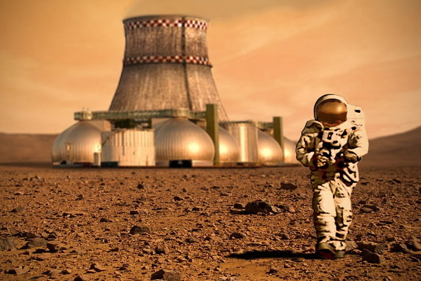
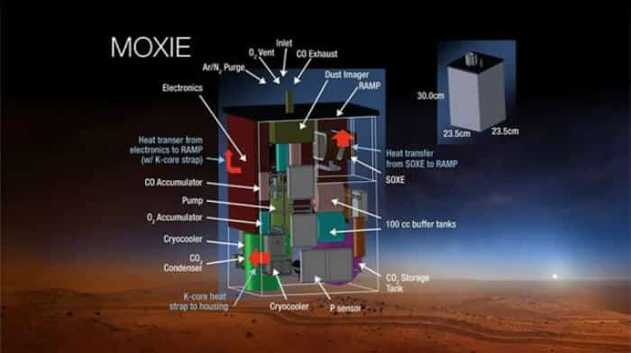
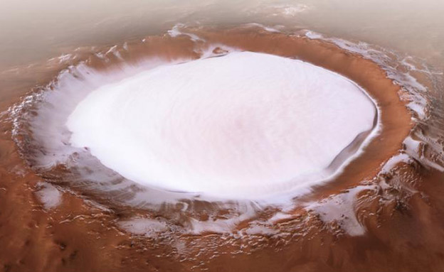
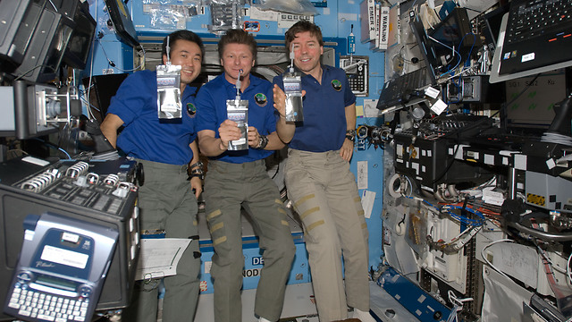
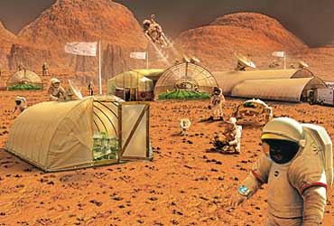
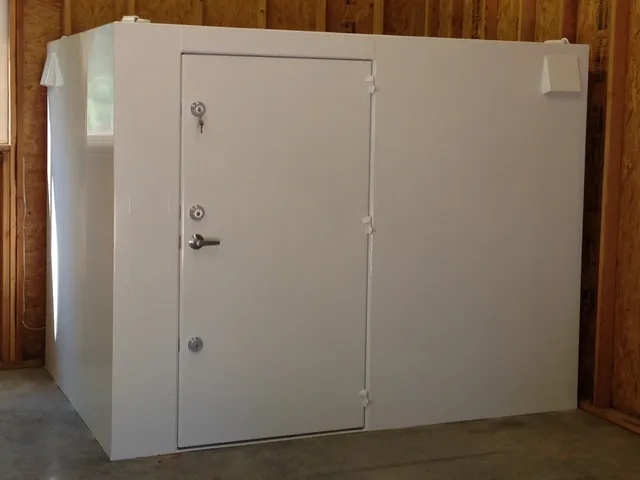

חמצן במאדים
כיצד לנשום באטמוספירת מאדים הדלילה?

האטמוספירה של מאדים דלילה מאוד ומורכבת בעיקר מפחמן דו-חמצני. נשימה ישירה בלתי אפשרית, וחליפת חלל מלאה וחמצן חיצוני הם ציוד קריטי להישרדות.
ייצור חמצן מקומי: טכנולוגיות עתידניות

התפתחות טכנולוגיות לייצור חמצן מפחמן דו-חמצני (כמו MOXIE) חיונית לשהייה ממושכת. למדו כיצד המערכות הללו פועלות ומדוע הן קריטיות.
מים במאדים
היכן למצוא מים על מאדים?

מים קיימים בעיקר בצורת קרח בקטבים ומתחת לפני השטח. מים נוזליים נדירים וקצרי מועד, לכן תכנון ואיסוף חיוניים.
טיהור ומיחזור מים: המפתח לשרידות

על מאדים, כל טיפת מים היא קריטית. מערכות טיהור ומיחזור מים מתקדמות הן הכרח, החל ממיחזור מים מנוזלי גוף ועד טיהור מקרח מאדים.
מזון במאדים
גידול מזון במאדים: חקלאות הידרופונית

גידול מזון בסביבה סגורה באמצעות שיטות הידרופוניקה ואארופוניקה מאפשר אספקה קבועה. למדו כיצד להקים חממה מאדימית משלכם.
מצבי חירום: הגנה ומיגון
אזהרה
התחמקות מסופות אבק: בניית מקלט בטוח

סופות אבק במאדים עלולות להיות קטלניות. השתמשו במקלטים ובנו נוספים כדי להגן על עצמכם ועל הציוד שלכם מפני איומים סביבתיים.